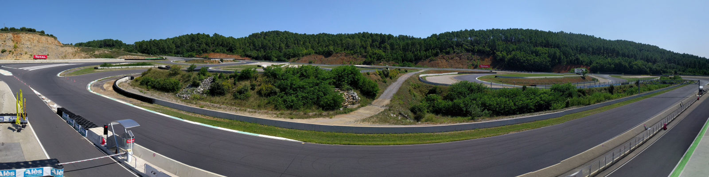

La météo s'annonce pluvieuse l'après-midi, donc j'essaie de rouler un maximum le matin pour me rappeler des trajectoires du circuit. Finalement la pluie arrive en milieu d'après-midi et j'ai réussi à profiter d'une piste sèche pendant 4 sessions. Ce qui est pas mal en une journée sachant qu'il a fallu passer le contrôle technique et assister au briefing des pilotes. Je suis à 1 seconde de mon meilleur temps de l'an passé qui est 1'21"3. Mon objectif pour le weekend est d'arriver en 1'20 en course tout en étant régulier en 1'21.
Le samedi matin je pars pour 20 minutes de qualifications. Je n'ai pas de groupe électrogène donc j'arrive le plus tard possible en pré-grille pour garder les pneus chauds au maximum. Au premier tour je sens la moto lourde à mettre sur l'angle. Les quelques minutes d'attente en pré-grille ont suffi à refroidir les pneus. Je prends le temps de les chauffer. De toute façon le tour de lancement n'est pas chronométré. J'essaie d'être propre sur les trajectoires et de rouler sans forcer, mais malheureusement ça ne paie puisque je réalise seulement un 1'23"2. Je suis qualifié 33 sur 34 pilotes. Même si on n'est peu nombreux le niveau reste relevé car la plupart des pilotes devant ont tous marqué des points au championnat.
Le samedi après-midi est donné le départ de la 1ère finale. J'arrive à gagner 2 places lors du premier tour. Hélas, un concurrent me coupe la route au 2ème tour. Je suis obligé de relever la moto. Lui passe par l'échappatoire de justesse mais c'est trop tard pour moi. Je suis obligé de tirer dans le bac à graviers. Heureusement je ne chute pas mais j'en ressors avec 20 secondes de perdues. Je fais la course seul ce qui est ennuyeux ...
J'arrive en pré-grille le dimanche en fin d'après-midi pour la 2ème finale. Je gagne à nouveau 2 places au 1er tour. Cette fois-ci le 2ème tour se passe heureusement sans encombre. Le groupe de pilotes de devant est trop rapide, je n'arrive pas à les accrocher. J'améliore mon meilleur tour en 1'20"7 mais il faut que je continue à travailler ma régularité.
C'était ma dernière course de la saison en coupe de France Promosport. Je suis encore une fois ravi d'avoir pu y participer et j'espère y rouler l'année prochaine pour continuer à améliorer les chronos.
Crédits photos Étienne Maurin.